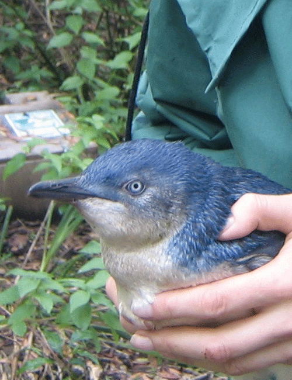

About Us
About the organisation The aim of the Penguin Warden scheme is to ensure that the penguins can breed in safety and away from human or dog interference. The wardens try and ensure:
- Patrol of beaches and penguin breeding areas – prevent dogs being on beaches and unleashed within 50 meters of penguin nesting areas.
- Prevent contact with penguins or nesting areas.
- Prevent use of flash photography of penguins.
- Educate and inform public about penguins and draw attention to Council and NPWS regulations regarding dogs, boating, interference with penguins and fishing.
The volunteer penguin wardens patrol critical areas nightly from the beginning of the season when the first penguins are noted to have come back in to their burrows. Temporary signage and barriers have been erected by volunteers in an effort to protect the birds whilst they are nesting and prevent unleashed dogs and public from getting too close to the birds or disturbing their nests. Manly Council recently installed permanent steel gates and adequate signage.